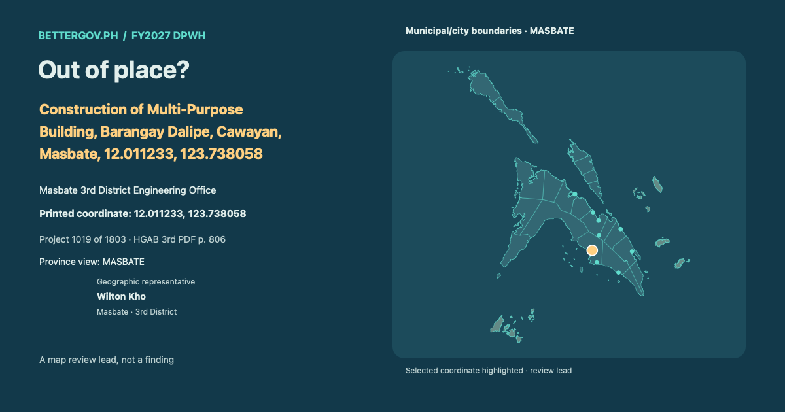

Out of place? · Construction of Multi-Purpose Building, Barangay Dalipe, Cawayan, Masbate, 12.011233, 123.738058

Geographic representative
 Open interactive map and project card ↗
Open interactive map and project card ↗Masbate 3rd District Engineering Office · Geographic representative: Wilton Kho · Masbate · 3rd District. Printed coordinate 12.011233, 123.738058. Geographic coverage is not sponsorship. Proposed allocation. Coordinate signals are review leads, not findings.